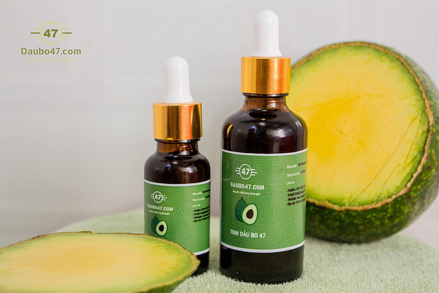

Tinh dầu bơ không còn xa lạ gì đối với các chị em trong các “bí kíp” giữ làn da trẻ trung, khỏe mạnh và loại bỏ các dấu hiệu lão hóa. Nhưng liệu tinh dầu bơ có phù hợp với da dầu hay không? Đó cũng là thắc mắc của nhiều chị em. Hãy cùng chúng tôi tìm hiểu qua bài viết Da dầu có dùng được tinh dầu bơ không ? nhé!
1. Tinh chất bơ là gì ?
Tinh chất bơ hay còn gọi là tinh dầu bơ là một loại chất lỏng được ép ra từ quả bơ. Người ta sử dụng các phương pháp ép tự nhiên truyền thống để lấy dầu hoặc sử dụng công nghệ hiện đại để cho ra các thành phẩm tinh chất bơ.
Trong tinh chất bơ có chứa nhiều thành phần tốt cho sức khỏe, đặc biệt là cho làn da. Các loại vitamin giúp bạn có làn da đẹp như vitamin E và A là hai dưỡng chất thiết yếu có trong loại dầu này. Hơn thế nữa, tinh dầu bơ còn có chứa sterolins – là chất kích thích quá trình sản sinh collagen trong cơ thể, giúp cho làn da của bạn lấy lại đồ đàn hồi, săn chắc và mịn màng. Đồng thời, có tác dụng cực tốt trong việc ngăn chặn quá trình lão hóa da đang dần “cướp” đi vẻ đẹp thanh xuân của các chị em.
2. Tinh dầu bơ phù hợp với da dầu không ?
Do có thể tạo ra collagen nên đối với các loại da khô thì tinh chất bơ hoàn toàn phù hợp và da khô cần dưỡng ẩm và loại tinh dầu này có thể làm được điều đó. Tuy nhiên, đối với da dầu thì sao? Đầu tiên chúng ta cần hiểu rằng: những ai sở hữu làn da dầu thì khả năng bị mụn hay các dị ứng da rất dễ gặp phải. Bởi lẽ da bạn thường xuyên tiết ra các chất bã nhờn, làm bít lỗ chân lông làm da không thể “thở” nổi, tạo môi trường tốt cho các loại vi khuẩn sinh sôi gây hại cho da.
Chính vì lẽ đó, da dầu rất cần được đào thải các loại vi khuẩn cũng như chất độc hại mà da bị “tồn đọng” do không thể “hô hấp”. Tinh chất bơ có khả năng nuôi dưỡng các lớp tế bào da từ sâu bên trong, collagen giúp tái sinh lại tế bào da và đặc biệt có thể lấy đi đáng kể lượng dầu dư thừa trên da, giúp da bạn thoát khỏi tình trạng nổi mụn.
Hơn thế nữa, với cơ chế kháng viêm, kháng khuẩn, tinh chất bơ sẽ khiến làn da của bạn phục hồi nhanh chóng các thương tổn do vi khuẩn gây ra. Các dưỡng chất sẽ thấm sâu vào biểu bì, thân bì và cả hạ bì nên hiệu quả dùng cho da có thể tốt hơn cả các loại kem dưỡng da thông thường.
3. Cách sử dụng tinh chất bơ cho da dầu
Do có thể tạo ra collagen nên đối với các loại da khô thì tinh chất bơ hoàn toàn phù hợp và da khô cần dưỡng ẩm và loại tinh dầu này có thể làm được điều đó. Tuy nhiên, đối với da dầu thì sao? Đầu tiên chúng ta cần hiểu rằng: những ai sở hữu làn da dầu thì khả năng bị mụn hay các dị ứng da rất dễ gặp phải. Bởi lẽ da bạn thường xuyên tiết ra các chất bã nhờn, làm bít lỗ chân lông làm da không thể “thở” nổi, tạo môi trường tốt cho các loại vi khuẩn sinh sôi gây hại cho da.
Chính vì lẽ đó, da dầu rất cần được đào thải các loại vi khuẩn cũng như chất độc hại mà da bị “tồn đọng” do không thể “hô hấp”. Tinh chất bơ có khả năng nuôi dưỡng các lớp tế bào da từ sâu bên trong, collagen giúp tái sinh lại tế bào da và đặc biệt có thể lấy đi đáng kể lượng dầu dư thừa trên da, giúp da bạn thoát khỏi tình trạng nổi mụn.
Hơn thế nữa, với cơ chế kháng viêm, kháng khuẩn, tinh chất bơ sẽ khiến làn da của bạn phục hồi nhanh chóng các thương tổn do vi khuẩn gây ra. Các dưỡng chất sẽ thấm sâu vào biểu bì, thân bì và cả hạ bì nên hiệu quả dùng cho da có thể tốt hơn cả các loại kem dưỡng da thông thường.
3. Cách sử dụng tinh chất bơ cho da dầu

Khi sử dụng tinh dầu bơ để gội đầu, điều tốt nhất là các chị em nên massage da một cách nhẹ nhàng để các dưỡng chất có thể thẩm thấu nhanh chóng vào sâu bên trong da.
Thời điểm sử dụng: những người bị da dầu nên dùng tinh chất bơ để dưỡng da vào buổi tối trước khi đi ngủ là tốt nhất. Đặc biệt, phải thực hiện các bước dưỡng da ban đêm cơ bản như: tẩy trang, rửa mặt sạch với nước ấm hoặc sữa rửa mặt trước khi thoa tinh chất bơ. Điều đó giúp da có thể dễ dàng hấp thu dưỡng chất hơn.
Như vậy có thể thấy rằng, tinh chất bơ hoàn toàn có thể dùng được và dùng tốt cho da dầu. Không chỉ có tác dụng dưỡng da, chống lão hóa mà còn hỗ trợ điều trị mụn và làm lành các vết thương ở da, quá tuyệt vời đúng không nào! Nếu dùng tinh chất bơ đúng liều lượng và đúng cách, bạn sẽ sở hữu làn da trắng khỏe không tì vết.
Với những chia sẻ trên, chắc chắn bạn đã biết được rằng tinh chất bơ có thể phù hợp với mọi loại da rồi đúng không nào? Nếu đang có ý định dùng thì bạn cũng đừng ngần ngại nữa nhé! Chúc bạn có làn da khỏe đẹp!
Thời điểm sử dụng: những người bị da dầu nên dùng tinh chất bơ để dưỡng da vào buổi tối trước khi đi ngủ là tốt nhất. Đặc biệt, phải thực hiện các bước dưỡng da ban đêm cơ bản như: tẩy trang, rửa mặt sạch với nước ấm hoặc sữa rửa mặt trước khi thoa tinh chất bơ. Điều đó giúp da có thể dễ dàng hấp thu dưỡng chất hơn.
Như vậy có thể thấy rằng, tinh chất bơ hoàn toàn có thể dùng được và dùng tốt cho da dầu. Không chỉ có tác dụng dưỡng da, chống lão hóa mà còn hỗ trợ điều trị mụn và làm lành các vết thương ở da, quá tuyệt vời đúng không nào! Nếu dùng tinh chất bơ đúng liều lượng và đúng cách, bạn sẽ sở hữu làn da trắng khỏe không tì vết.
Với những chia sẻ trên, chắc chắn bạn đã biết được rằng tinh chất bơ có thể phù hợp với mọi loại da rồi đúng không nào? Nếu đang có ý định dùng thì bạn cũng đừng ngần ngại nữa nhé! Chúc bạn có làn da khỏe đẹp!